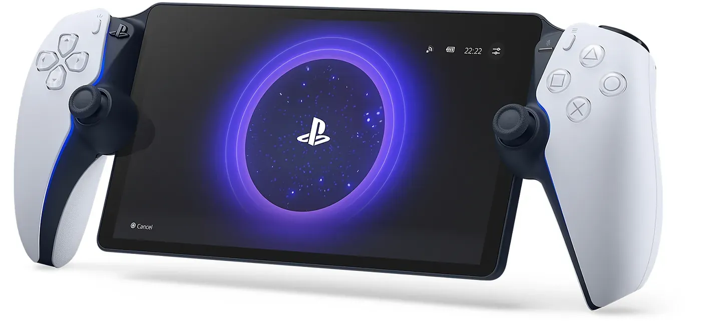

2023 年发布
PlayStation Portal
PS5 Remote Play专用串流掌机 · DualSense完整体验
8寸
LCD屏幕
1080p
分辨率
60fps
帧率
$199.9
首发价格
📖 历史与背景
2023年11月15日，索尼在全球发售PlayStation Portal（开发代号"Project Q"）——一款专注于PS5 Remote Play的专用串流掌机。Portal不是一台独立的游戏设备，它需要配合PS5使用：通过Wi-Fi将PS5的画面串流到Portal的8寸1080p LCD屏幕上。
Portal的核心卖点是"将DualSense手柄的完整体验带到掌机上"。它的左右两半直接就是DualSense手柄的拆分版（保留了自适应扳机和触觉反馈），中间夹着一块8寸屏幕。对希望在被家人占用电视时继续游戏的用户来说，Portal是一个完美的解决方案。
Portal的推出时机也很有讲究：在PS5 Pro发布前一年推出串流掌机，索尼希望让玩家习惯"不在电视前也能玩PS5"的模式。Portal上市后表现出乎很多看衰者的意料——首月销量超预期，在部分地区甚至脱销。
⚙️ 硬件规格
屏幕
8寸 1080p LCD
分辨率
1920×1080
帧率
最高 60fps
连接
Wi-Fi 5（未发布时传言支持Wi-Fi 7但实际仅有Wi-Fi 5）
手柄
DualSense自适应扳机+触觉反馈
音频
3.5mm耳机口+内置扬声器
重量
约529g
续航
约7-9小时
🎮 使用体验
- 核心用法：在家中通过Wi-Fi串流PS5游戏——当电视被占时，拿起Portal继续玩
- DualSense体验完整：Portal保留了全部DualSense功能——触觉反馈、自适应扳机、陀螺仪在Portal上完全可用
- 非独立设备：Portal自身不能运行任何游戏，必须通过PS5串流（远程同局域网均可）
- 不支持蓝牙：Portal不支持蓝牙耳机，需使用Sony官方的PlayStation Pulse系列无线耳机（通过PlayStation Link技术）
- 云串流Beta：2024年索尼为PS Plus Premium会员推出了Portal云串流Beta测试——可以直接从云端串流PS5游戏
🏆 市场表现
- 逆袭表现：Portal上市前被大量媒体和玩家看衰（"只是一块屏幕+两个手柄把手"），但实际销量远超预期
- Wi-Fi 5争议：Portal仅支持Wi-Fi 5（802.11ac）而缺少Wi-Fi 6/7支持，在密集Wi-Fi环境下可能存在延迟
- 串流质量：Portal的串流体验严重依赖家庭Wi-Fi质量——最佳体验需要PS5有线连接路由器、Portal在5GHz Wi-Fi下使用
- 未来展望：Portal的云串流Beta预示着索尼可能在探索云游戏方向——如果真的全面开放云串流，Portal将成为一台真正的独立掌机